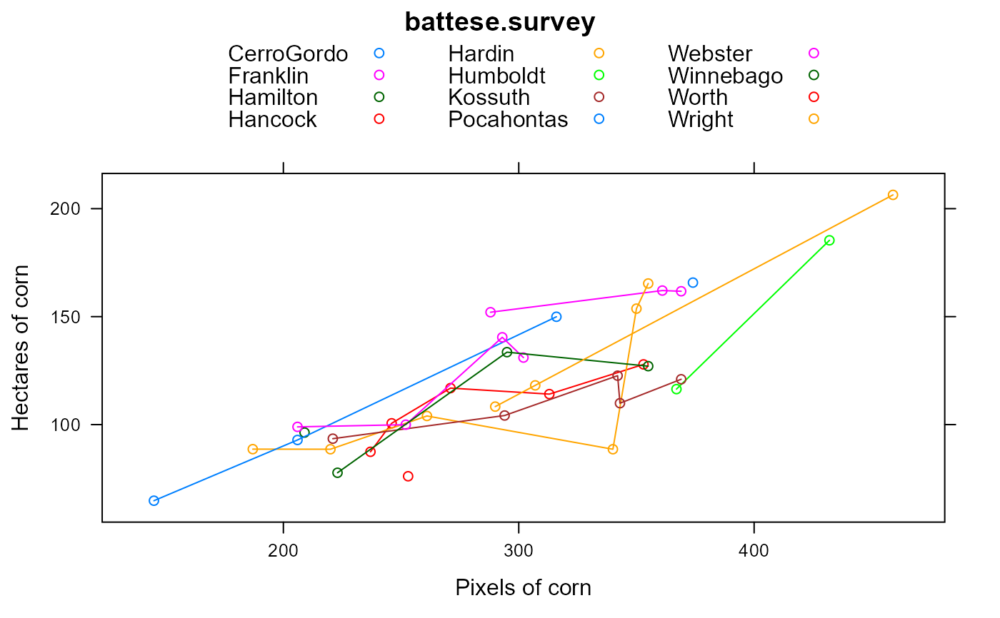
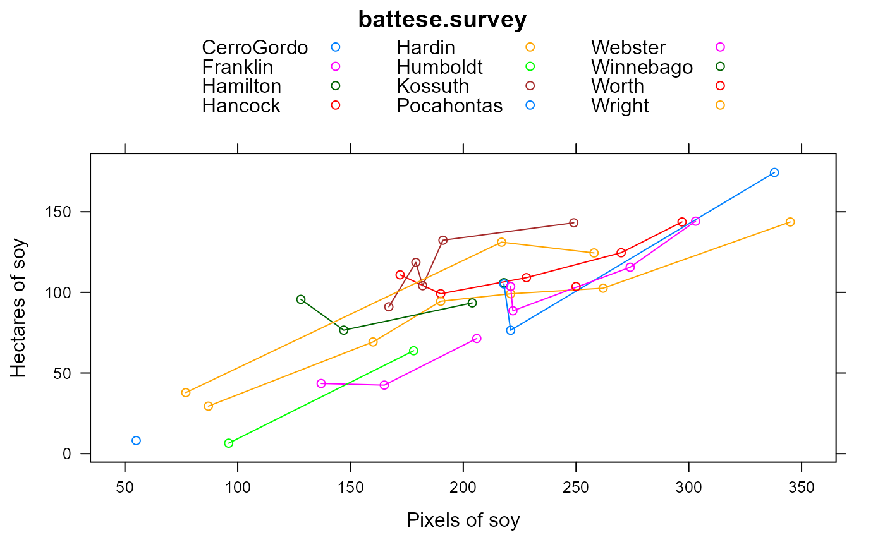

battese.survey.RdSurvey and satellite data for corn and soy areas in Iowa
data("battese.survey")
A data frame with 37 observations on the following 9 variables.
countycounty name
segmentsample segment number (within county)
countysegsnumber of segments in county
cornhecthectares of corn in segment
soyhecthectares of soy
cornpixpixels of corn in segment
soypixpixels of soy
cornmeancounty mean of corn pixels per segment
soymeancounty mean of soy pixels per segment
The data are for 12 counties in north-central Iowa in 1978.
The USDA determined the area of soybeans in 37 area sampling units (called 'segments'). Each segment is about one square mile (about 259 hectares). The number of pixels of that were classified as corn and soybeans came from Landsat images obtained in Aug/Sep 1978. Each pixel represents approximately 0.45 hectares.
Data originally compiled by USDA.
This data is also available in R packages: 'rsae::landsat' and 'JoSAE::landsat'.
Battese, George E and Harter, Rachel M and Fuller, Wayne A. (1988). An error-components model for prediction of county crop areas using survey and satellite data. emphJournal of the American Statistical Association, 83, 28-36. https://doi.org/10.2307/2288915
Battese (1982) preprint version. https://www.une.edu.au/__data/assets/pdf_file/0017/15542/emetwp15.pdf
Pushpal K Mukhopadhyay and Allen McDowell. (2011). Small Area Estimation for Survey Data Analysis Using SAS Software SAS Global Forum 2011.
# \dontrun{ library(agridat) data(battese.survey) dat <- battese.survey # Battese fig 1 & 2. Corn plot shows outlier in Hardin county libs(lattice) dat <- dat[order(dat$cornpix),] xyplot(cornhect ~ cornpix, data=dat, group=county, type=c('p','l'), main="battese.survey", xlab="Pixels of corn", ylab="Hectares of corn", auto.key=list(columns=3))dat <- dat[order(dat$soypix),] xyplot(soyhect ~ soypix, data=dat, group=county, type=c('p','l'), main="battese.survey", xlab="Pixels of soy", ylab="Hectares of soy", auto.key=list(columns=3))#>#> #> #> #> #> #># Fit the models of Battese 1982, p.18. Results match m1 <- lmer(cornhect ~ 1 + cornpix + (1|county), data=dat) fixef(m1)#> (Intercept) cornpix #> 5.4661899 0.3878358## (Intercept) cornpix ## 5.4661899 0.3878358 vc(m1)#> grp var1 var2 vcov sdcor #> county (Intercept) <NA> 62.83 7.926 #> Residual <NA> <NA> 290.4 17.04## grp var1 var2 vcov sdcor ## county (Intercept) <NA> 62.83 7.926 ## Residual <NA> <NA> 290.4 17.04 m2 <- lmer(soyhect ~ 1 + soypix + (1|county), data=dat) fixef(m2)#> (Intercept) soypix #> -3.8223566 0.4756781## (Intercept) soypix ## -3.8223566 0.4756781 vc(m2)#> grp var1 var2 vcov sdcor #> county (Intercept) <NA> 239.2 15.47 #> Residual <NA> <NA> 180 13.42## grp var1 var2 vcov sdcor ## county (Intercept) <NA> 239.2 15.47 ## Residual <NA> <NA> 180 13.42 # Predict for Humboldt county as in Battese 1982 table 2 5.4662+.3878*290.74#> [1] 118.2152# 118.2152 # mu_i^0 5.4662+.3878*290.74+ -2.8744#> [1] 115.3408# 115.3408 # mu_i^gamma (185.35+116.43)/2#> [1] 150.89# 150.89 # y_i bar # Survey regression estimator of Battese 1988 # Delete the outlier dat2 <- subset(dat, !(county=="Hardin" & soyhect < 30)) # Results match top-right of Battese 1988, p. 33 m3 <- lmer(cornhect ~ cornpix + soypix + (1|county), data=dat2) fixef(m3)#> (Intercept) cornpix soypix #> 51.0703979 0.3287217 -0.1345684## (Intercept) cornpix soypix ## 51.0703979 0.3287217 -0.1345684 vc(m3)#> grp var1 var2 vcov sdcor #> county (Intercept) <NA> 140 11.83 #> Residual <NA> <NA> 147.3 12.14## grp var1 var2 vcov sdcor ## county (Intercept) <NA> 140 11.83 ## Residual <NA> <NA> 147.3 12.14 m4 <- lmer(soyhect ~ cornpix + soypix + (1|county), data=dat2) fixef(m4)#> (Intercept) cornpix soypix #> -15.59027112 0.02717639 0.49439320## (Intercept) cornpix soypix ## -15.59027098 0.02717639 0.49439320 vc(m4)#> grp var1 var2 vcov sdcor #> county (Intercept) <NA> 247.5 15.73 #> Residual <NA> <NA> 190.5 13.8## grp var1 var2 vcov sdcor ## county (Intercept) <NA> 247.5 15.73 ## Residual <NA> <NA> 190.5 13.8 # }